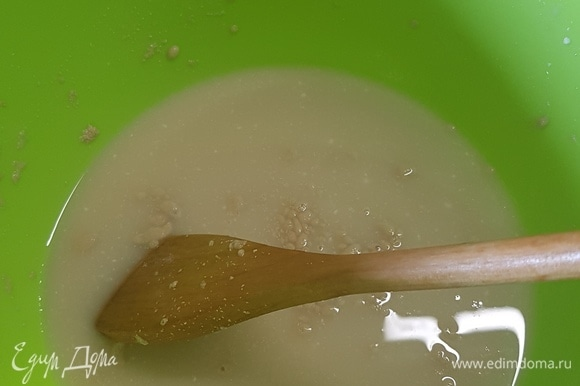

Cooking Instruction
|
Photos
|
- Dissolve yeast with sugar in warm water.
- Add salt, oil and flour to yeast water.
Knead the dough. Leave up. During the ascent, knead twice.
- The dough rises very well.
- Divide the dough into four portions. Roll each into an oval and roll into a roll.
- Leave to rise for 20 minutes.
- Make an incision on the side of each bread.
Then cover with the second baking sheet on top. First bake for 15 minutes at 250 ° C.
Then remove the baking sheet and bake for another 20 minutes at 200 ° C.
- The bread turns out to be rosy. Cool a little and you can eat it.
- The top is crispy and the inside is tender crumb.
|
- 
|
Ilja H. © 2020